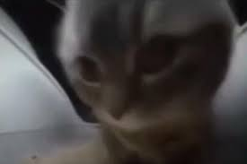

Чипи чипи чапа чапа
Место в рейтинге: (18324)
Автор: melOyyyy_02
История: История: Чипи Чипи Чапа Чапа – запоминающийся припев из песни Кристелл “Дубидубиду”. Путь трека к популярности начался благодаря аниматору Kuowonn, чья анимация под припев собрала миллионы просмотров в тиктоке. Но пика он достиг в декабре 2023 года, когда пользователь ТикТока с ником mel0yyyy_02 опубликовал ролик, в котором трек наложили на котёнка, раскачивающегося в лотке.